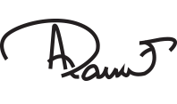

Statement of Compliance with Listed Companies
(Code of Corporate Governance) Regulations, 2019
The Company has complied with the requirements of the Regulations in the following manner:
- The total number of directors are seven (7) as per the following:
- Male: Six (6)
- Female: One (1)
- The composition of board is as follows:
| Independent Directors |
Abrar Hassan |
| Zuhair Khaliq |
| Non-Executive Directors |
Abdul Samad Dawood (Chairman)
|
|
Roeland Francois Van Neerbos
|
|
Eduardus Lambertus Holtzer
|
|
Petra Attje Zinkweg (Female Director)
|
| Executive Directors |
Ali Ahmed Khan (Chief Executive Officer – CEO)
|
- The directors have confirmed that none of them is serving as a director on more than five listed companies,
including this company.
- The company has prepared a Code of Conduct and has ensured that appropriate steps have been taken to
disseminate it throughout the company along with its supporting policies and procedures.
- The Board has developed a vision/mission statement, overall corporate strategy and significant policies of the
company. The Board has ensured that complete record of particulars of the significant policies along with their
date of approval or updating is maintained by the company;
- All the powers of the Board have been duly exercised and decisions on relevant matters have been taken by
the Board/ shareholders as empowered by the relevant provisions of the Act and these Regulations;
- The meetings of the Board were presided over by the Chairman and, in his absence, by a director elected by
the Board for this purpose. The Board has complied with the requirements of the Act and the Regulations with
respect to frequency, recording and circulating minutes of meeting of the Board;
- The Board has a formal policy and transparent procedures for remuneration of directors in accordance with
the Act and these Regulations.
- The Board has arranged Directors’ Training program for the Executive Director & CEO Mr. Ali Ahmed Khan
during the year ended December 31, 2019.
- There was no fresh appointment of CFO, Company Secretary and Head of Internal Audit during the year ended
December 31, 2019. The Board has approved the remuneration of Chief Financial Officer, Company Secretary
and Head of Internal Audit and complied with relevant requirements of the Regulations;
- Chief Financial Officer and Chief Executive Officer duly endorsed the financial statements before approval of
the Board;
- The Board formed in the prior year Committees comprising of members given below:
| Abrar Hasan (Chairman) |
Zouhair Khaliq (Chairman) |
| Zouhair Khaliq |
Petra Attje Zinkweg (Female Director) |
| Eduardus Lambertus Holtzer |
Ali Ahmed Khan |
- The terms of reference of the aforesaid committees have been formed, documented and advised to the
committees for compliance.
- The frequency of meetings of the Committees was as follows:
- Audit Committee: Four quarterly meetings during the financial year ended December 31, 2019.
- Human Resource and Remuneration Committee: Two quarterly meetings during the financial year ended
December 31, 2019.
- The Board has set up an effective internal audit function comprising of suitably qualified and experienced staff
who are conversant with the policies and procedures of the company;
- The statutory auditors of the company have confirmed that they have been given a satisfactory rating under
the Quality Control Review program of the Institute of Chartered Accountants of Pakistan and registered with
Audit Oversight Board of Pakistan, that they and all their partners are in compliance with International
Federation of Accountants (IFAC) guidelines on code of ethics as adopted by the Institute of Chartered
Accountants of Pakistan and that they and the partners of the firm involved in the audit are not a close relative
(spouse, parent, dependent and non-dependent children) of the Chief Executive Officer, Chief Financial Officer,
Head of Internal Audit, Company Secretary or Director of the Company;
- The statutory auditors or the persons associated with them have not been appointed to provide other services
except in accordance with the Act, these Regulations or any other regulatory requirement and the auditors
have confirmed that they have observed IFAC guidelines in this regard; and
- We confirm that all requirements of regulations 3, 6, 7, 8, 27,32, 33 and 36 of the Regulations have been
complied with.

Abdul Samad Dawood
Chairman
Karachi
Date: February 6, 2020